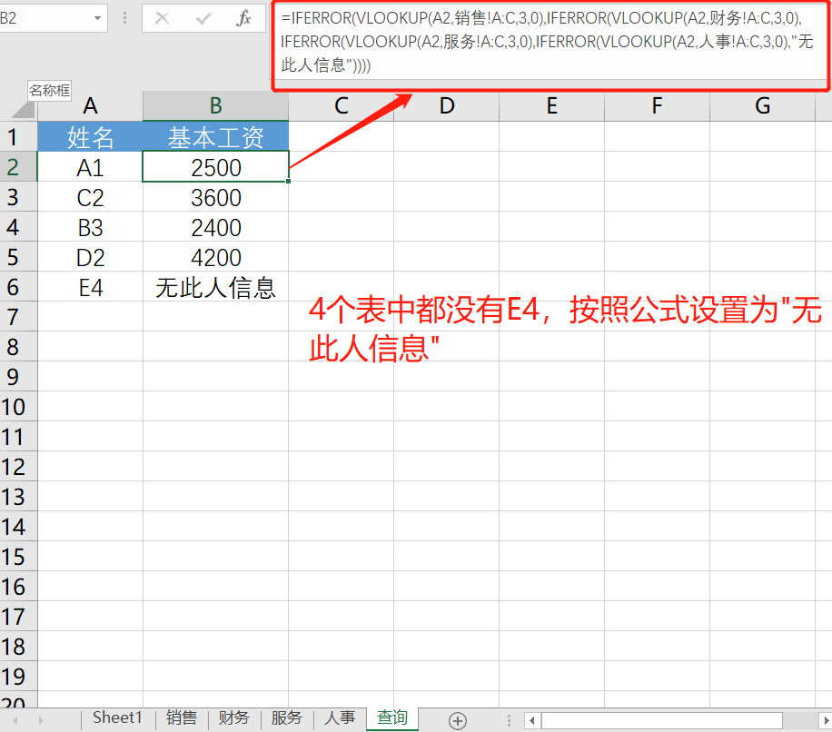
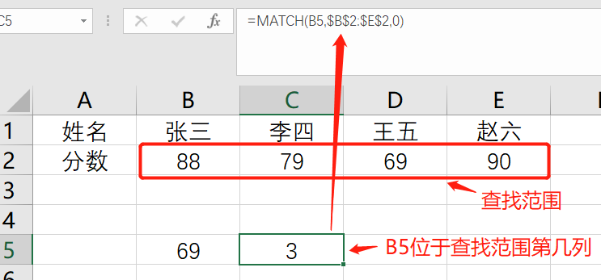
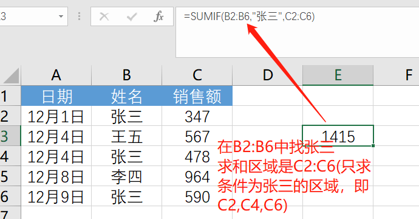
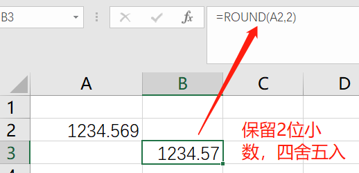

原文连接:https://www.cnblogs.com/bfcs/p/12071847.html
Excel是我们工作中经常使用的一种工具，对于数据分析来说，这也是处理数据最基础的工具。
本文对数据分析需要用到的函数做了分类，并且有详细的例子说明，文章已做了书签处理，点击可跳转至相应位置。
函数分类：
经常性的，需要的数据不在同一个excel表或同一个excel表不同sheet中，数据太多，copy麻烦也不准确，如何整合呢？这类函数就是用于多表关联或者行列比对时的场景，而且表越复杂，用得越多。
包含函数：VLOOKUP、HLOOKUP、INDEX、MATCH、RANK、Row、Column、Offset
功能：用于查找首列满足条件的元素。
语法：=VLOOKUP（要查找的值，要在其中查找值的区域，区域中包含返回值的列号，精确匹配(0)或近似匹配(1) ）。
(1) 单表查找
把选手Tian的战队找到之后，接下来把鼠标放到G8单元格右下角位置，出现十字符号后往下拉，Excel会根据单元格的变化自动填充G9和G10单元格的公式。
(2) 跨多工作表查找
假设我有一个工资表格文件，里面每个部门有一张表，有4个部门对应的部门工资表和一个需要查询工资的查询表，为方便说明这里的姓名取方便识别的编号，你也可以用真正的姓名。
在查询表中，要求根据提供的姓名，从销售~人事4个工作表中查询该员工的基本工资。
如果，我们知道A1是销售部的，那么公式可以写为：=VLOOKUP(A2,销售!A:C,3,0)
如果，我们知道A1可能在销售或财务表这2个表中，公式可以写为：=IFERROR(VLOOKUP(A2,销售!A:C,3,0),VLOOKUP(A2,财务!A:C,3,0))
意思是，如果在销售表中查找不到(用IFERROR函数判断)，则去财务表中再查找。
如果，我们知道A1可能在销售、财务或服务表中，公式可以再次改为：=IFERROR(VLOOKUP(A2,销售!A:C,3,0),IFERROR(VLOOKUP(A2,财务!A:C,3,0),VLOOKUP(A2,服务!A:C,3,0)))
如果，有更多的表，如本例中4个表，那就一层层的套用下去，如果4个表都查不到就设置为"无此人信息"：=IFERROR(VLOOKUP(A2,销售!A:C,3,0),IFERROR(VLOOKUP(A2,财务!A:C,3,0),IFERROR(VLOOKUP(A2,服务!A:C,3,0),IFERROR(VLOOKUP(A2,人事!A:C,3,0),"无此人信息"))))

当查找的值位于查找范围的首行，并且返回的值在查找范围的第几行，可以使用 hlookup 函数
语法：=HLOOKUP（要查找的值，查找的范围，返回的值在查找范围的第几行，精确匹配(0)或近似匹配(1) ）。
区别：HLOOKUP按行查找，返回的值与需要查找的值在同一列上，VLOOKUP按列查找，返回的值与需要查找的值在同一行上。
在Excel中，除了VLOOKUP函数常用来查找引用外，INDEX函数和MATCH函数组合也可用来做查找引用工作，这组函数有效弥补了VLOOKUP函数查找目标不在查找范围数据首列的缺陷。
功能：返回表格或区域中的值。
语法：= INDEX(要返回值的单元格区域或数组,所在行,所在列)
功能：用于返回指定内容在指定区域（某行或者某列）的位置。
语法：= MATCH (要查找的值，查找的区域，查找方式)，查找方式0为等于查找值，1为小于查找值，-1为大于查找值

功能：求某一个数值在某一区域内的数值排名。
语法：=RANK(参与排名的数值, 排名的数值区域, 排名方式-0是降序-1是升序-默认为0）。
功能：返回单元格所在的行
语法：ROW()或ROW(某个单元格)
功能：返回单元格所在的列
语法：COLUMN()或COLUMN(某个单元格)

功能：从指定的基准位置按行列偏移量返回指定的引用
语法：＝Offset（指定点，偏移多少行(正数向下，负数向上)，偏移多少列(正数向右，负数向左)，返回多少行，返回多少列）
数据处理之前，需要对提取的数据进行初步清洗，如清除字符串空格，合并单元格、替换、截取字符串、查找字符串出现的位置等。
-
清除字符串前后空格：使用Trim
-
合并单元格：使用concatenate
-
替换单元格中内容：Replace/Substitute
- 获取字符长度：Len/Lenb
- 筛选包含某个条件的 内容：IF+OR+COUNTIF
功能：主要用于把单元格内容前后的空格去掉，但并不去除字符之间的空格，如果是想要去掉所有的空格，需要用substitute函数。。
语法：=TRIM(单元格)
语法：=Concatenate(单元格1，单元格2……)
合并单元格中的内容，还有另一种合并方式是&，需要合并的内容过多时，concatenate效率更快。
功能：从左截取字符串
语法：=Left(值所在单元格，截取长度)
功能：从右截取字符串
语法：= Right (值所在单元格，截取长度)
功能：从中间截取字符串
语法：= Mid(指定字符串，开始位置，截取长度)
Text函数表示将数值转化为自己想要的文本格式，语法=TEXT(value,format_text)
功能：替换掉单元格的字符串
语法：=Replace（指定字符串，哪个位置开始替换，替换几个字符，替换成什么）
和replace接近，不同在于Replace根据位置实现替换，需要提供从第几位开始替换，替换几位，替换后的新的文本；
而Substitute根据文本内容替换，需要提供替换的旧文本和新文本，以及替换第几个旧文本等。因此Replace实现固定位置的文本替换，Substitute实现固定文本替换。
功能：查找文本位置
语法：=Find（要查找字符，指定字符串，从第几个字符开始查起）
功能：返回一个指定字符或文本字符串在字符串中第一次出现的位置 ,从左到右查找
语法：=search（要查找的字符，字符所在的文本，从第几个字符开始查找）
Find和Search这两个函数功能几乎相同，实现查找字符所在的位置，区别在于Find函数精确查找，区分大小写；Search函数模糊查找，不区分大小写。
功能：返回字符串的字符数
语法：=LEN（字符串)
字符串是指包含数字、字母、符号等的一串字符。
功能：返回字符串的字节数。
区别在于，len是按字符数计算的，lenb是按字节数计算的。数字、字母、英文、标点符号（半角状态下输入的哦）都是按1计算的，汉字、全角状态下的标点符号，每个字符按2计算。
综合应用
=IF(OR(COUNTIF(A1,"*"&{"Python","java"}&"*")),A1,"0")
如果含有字段Python或java中的任何一个则为本身，否则为"0"，* 代表任意内容，之后就可以通过Excel的筛选功能，把B列的"0"筛选掉。
功能：使用逻辑函数 IF 函数时，如果条件为真，该函数将返回一个值；如果条件为假，函数将返回另一个值。
语法：=IF(条件, true时返回值, false返回值)
功能：逻辑判断，相当于“并”,"&"。
语法：全部参数为True，则返回True，经常用于多条件判断。
功能：逻辑判断，相当于“或”。
语法：只要参数有一个True，则返回Ture，经常用于多条件判断。
在利用excel表格统计数据时，常常需要使用各种excel自带的公式，也是最常使用的一类。重要性不言而喻。不过excel都自带快捷功能。
-
MIN函数：找到某区域中的最小值
-
MAX函数：找到某区域中的最大值
-
AVERAGE函数：计算某区域中的平均值
-
COUNT函数： 计算某区域中包含数字的单元格的数目
-
COUNTIF函数：计算某个区域中满足给定条件的单元格数目
-
COUNTIFS函数：统计一组给定条件所指定的单元格数
-
SUM函数：计算单元格区域中所有数值的和
-
SUMIF函数：对满足条件的单元格求和
-
SUMPRODUCT函数：返回相应的数组或区域乘积的和
- STDEV函数：求标准差
- SUBTOTAL函数：汇总型函数，将平均值、计数、最大最小、相乘、标准差、求和、方差等参数化
- INT/ROUND函数：取整函数，int向下取整，round按小数位取数。
功能：找到某区域中的最小值

功能：找到某区域中的最大值
功能：计算某区域中的平均值
功能：计算纯数字的单元格的个数。
功能：计算某个区域中满足给定条件的单元格数目
语法：=COUNTIF(单元格1: 单元格2 ,条件)
功能：统计一组给定条件所指定的单元格数
语法：=COUNTIFS(第一个条件区域，第一个对应的条件，第二个条件区域，第二个对应的条件，第N个条件区域，第N个对应的条件)
计算单元格区域中所有数值的和
功能：求满足条件的单元格和
语法：=SUMIF(单元格1: 单元格2 ,条件,单元格3: 单元格4)

功能：返回相应的数组或区域乘积的和
语法： =SUMPRODUCT(单元格1: 单元格2 ,单元格3: 单元格4)
统计型函数，求标准差，衡量离散程度。
语法：=Subtotal（参数，区域）
汇总型函数，将平均值、计数、最大最小、相乘、标准差、求和、方差等参数化，换言之，只要会了这个函数，上面的都可以抛弃掉了。
为 1 到 11（包含隐藏值）或 101 到 111（忽略隐藏值）之间的数字，指定使用何种函数在列表中进行分类汇总计算。
取整函数，int取整(去掉小数)，round按小数位取数(四舍五入)。
语法：ROUND(数值, 位数)
round(3.1415,2)=3.14 ;
round(3.1415,1)=3.1

专门用于处理时间格式以及转换。
-
TODAY函数：返回今天的日期，动态函数。
-
NOW函数：返回当前的时间，动态函数。
- YEAR函数：返回日期的年份。
- MONTH函数：返回日期的月份。
- DAY函数：返回以序列数表示的某日期的天数。
- WEEKDAY函数：返回对应于某个日期的一周中的第几天。
- Datedif函数：计算两个日期之间相隔的天数、月数或年数。
功能：返回今天的日期，动态函数。

功能：返回当前的日期和时间，动态函数。
语法：=NOW()
功能：返回日期的年份。
语法：=YEAR(日期)
功能：返回日期的月份。
语法：=MONTH(日期)
功能：返回以序列数表示的某日期的天数。
语法：=DAY(日期)
功能：返回对应于某个日期的一周中的第几天。 默认情况下， 1（星期日）到 7（星期六）范围内的整数。
语法：=Weekday(指定时间，参数)，参数设为2，则星期一为1，星期日为7
功能：计算两个日期之间相隔的天数、月数或年数。
语法：=Datedif（开始日期，结束日期，参数）
参数3：为所需信息的返回时间单位代码。各代码含义如下：
"y"返回时间段中的整年数
"m”返回时间段中的整月数
"d"返回时间段中的天数
"md”参数1和2的天数之差，忽略年和月
"ym“参数1和2的月数之差，忽略年和日
"yd”参数1和2的天数之差，忽略年。按照月、日计算天数